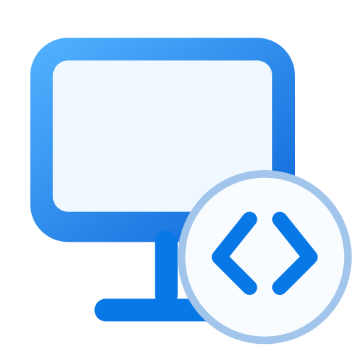

Computers
Open now
Saved
Add your first computer
Save its address and username, or type an address in the search field and press Enter.
Connecting
Starting the session

Win RDPNo saved computers yet. Type an address above and press Enter.
Enter connects. A green dot means that desktop is already open in its own window.
Save its address and username, or type an address in the search field and press Enter.
Starting the session